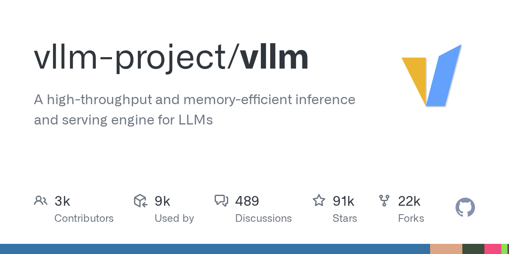

01 이번 주 급상승
주식 보고서를 자동으로 보내는 분석 시스템
“기본 무료 시세원으로 바로 돌릴 수 있지만, 장기 자동 실행이나 대량 분석에는 별도 데이터 소스를 붙이는 편이 낫다.”
Weekly AI Brief
이번 주에는 에이전트가 실제 업무를 대신 처리하는 저장소가 많이 보였다. 보고서 전송, 데이터 묶기, 선별·감시 같은 흐름이 한 작업대로 붙었고, 보안 쪽은 코드 점검과 수정까지 자동화하는 도구가 눈에 띄었다. 인프라 쪽에서는 대규모 언어모델을 더 빠르게 서빙하고 메모리를 아끼는 엔진이 주목받아, 실행 비용과 응답 속도를 줄이는 방향이 강화됐다. 배포 형태는 사내 서버에 두는 구성과 여러 결제사를 한 플랫폼으로 묶는 구성처럼, 운영 환경에 맞춰 통합하는 쪽이 이어졌다. 사내에서는 우선 코드 취약점 점검 자동화 도구를 제한된 저장소에 붙여 시험해 볼 만하다.

Editor's Pick
01 이번 주 급상승
“기본 무료 시세원으로 바로 돌릴 수 있지만, 장기 자동 실행이나 대량 분석에는 별도 데이터 소스를 붙이는 편이 낫다.”
04 주요 릴리스
“기존 결제 체계 위에 필요한 모듈만 얹을 수 있어, 한 사업자에 묶이지 않고 라우팅과 정산 자동화를 설계할 수 있다.”
08 인프라·런타임
“OpenAI 호환 API 서버를 제공해 기존 앱과 붙이기 쉽다.”
이번 주 가장 뜨거웠던 저장소 하나를 골랐습니다. 아래 섹션에도 그대로 실려 있습니다.
07 GitHub · shanraisshan 최근 활동 2026.09.06
스타 65,637 · 이번 주 +0 · HTML · MIT 사내 사용 가능 · 테스트 없음 · 예제 없음 · AGENTS.md 없음
shanraisshan/claude-code-best-practice는 Claude Code의 에이전트, 명령, 스킬, 훅, 워크플로를 정리한 학습용 저장소다.
“이 저장소는 워크플로보다 먼저 참고서처럼 읽으라고 안내한다.”
 07
07지난 7일 동안 스타가 빠르게 늘었거나 새로 등장해 주목받는 저장소입니다.
01 GitHub · zhulinsen 최근 활동 2026.09.05
스타 64,674 · 이번 주 +1 · Python · MIT 사내 사용 가능 · 최근 릴리스 v3.31.0 (08.23) · 테스트 있음 · 예제 없음 · AGENTS.md 있음
ZhuLinsen/daily_stock_analysis는 여러 주식시장의 종목을 AI로 분석해 보고서와 알림을 만드는 도구다.
“기본 무료 시세원으로 바로 돌릴 수 있지만, 장기 자동 실행이나 대량 분석에는 별도 데이터 소스를 붙이는 편이 낫다.”
 01
0102 GitHub · simonlin1212 최근 활동 2026.09.05
스타 9,626 · 이번 주 +0 · Python · Apache-2.0 사내 사용 가능 · 최근 릴리스 v3.8.0 (09.05) · 테스트 있음 · 예제 없음 · AGENTS.md 없음
simonlin1212/a-stock-data는 A주 데이터를 AI 코딩 도구가 바로 쓰게 정리한 데이터 툴킷이다.
“흩어진 원시 데이터를 AI 코딩 도구가 바로 쓰는 단일 Skill 파일로 묶었다.”
 02
0203 GitHub · shy3130 최근 활동 2026.09.06
스타 4,382 · 이번 주 +1 · Python · MIT 사내 사용 가능 · 테스트 없음 · 예제 없음 · AGENTS.md 있음
shy3130/tick-stock-panel은 A주 선별, 감시, 회고, 백테스트를 한곳에 모은 자가 호스팅 작업대다.
“선별, 감시, 회고를 한 화면에 모아 두고 데이터 소스는 플러그인처럼 갈아 끼운다.”
 03
03이번 주 안에 정식 릴리스를 낸 프로젝트의 의미 있는 버전 변화입니다.
04 GitHub · juspay 최근 활동 2026.09.06
스타 43,586 · 이번 주 +0 · Rust · Apache-2.0 사내 사용 가능 · 최근 릴리스 v1.126.0 (08.24) · 테스트 없음 · 예제 없음 · AGENTS.md 없음
juspay/hyperswitch는 여러 결제 사업자와 정산, 토큰 저장, 재시도, 비용 관찰 기능을 묶는 오픈소스 결제 플랫폼이다.
“기존 결제 체계 위에 필요한 모듈만 얹을 수 있어, 한 사업자에 묶이지 않고 라우팅과 정산 자동화를 설계할 수 있다.”
 04
0405 GitHub · openbyteinc 최근 활동 2026.09.04
스타 11,361 · 이번 주 +0 · Python · Apache-2.0 사내 사용 가능 · 최근 릴리스 v5.0.26 (09.03) · 테스트 없음 · 예제 없음 · AGENTS.md 없음
OpenByteInc/QuantDinger는 시장 조사부터 전략 작성, 백테스트, 모의·실거래, 운영 관리까지 묶은 오픈소스 AI 트레이딩 플랫폼이다.
“전략 코드, 위험 설정, 자격 증명, 배포는 운영자가 직접 통제한다.”
 05
05에이전트 프레임워크, MCP 서버, 코딩 보조, LLM 앱 개발 도구입니다.
06 GitHub · openai 최근 활동 2026.09.05
스타 10,464 · 이번 주 +0 · TypeScript · Apache-2.0 사내 사용 가능 · 최근 릴리스 npm-v0.1.25 (09.02) · 테스트 없음 · 예제 있음 · AGENTS.md 있음
openai/codex-security는 코드의 보안 취약점을 찾고, 검증하고, 수정까지 돕는 CLI와 TypeScript SDK다.
“완료된 취약점 결과를 올리고, 중복 후보를 다시 검토해 저장할 수 있다.”
 06
0607 GitHub · shanraisshan 최근 활동 2026.09.06
스타 65,637 · 이번 주 +0 · HTML · MIT 사내 사용 가능 · 테스트 없음 · 예제 없음 · AGENTS.md 없음
shanraisshan/claude-code-best-practice는 Claude Code의 에이전트, 명령, 스킬, 훅, 워크플로를 정리한 학습용 저장소다.
“이 저장소는 워크플로보다 먼저 참고서처럼 읽으라고 안내한다.”
07추론 서빙, 런타임, 양자화, GPU 커널, 벡터 DB 등 모델을 돌리는 바탕입니다.
08 GitHub · vllm-project 최근 활동 2026.09.06
스타 91,051 · 이번 주 +0 · Python · Apache-2.0 사내 사용 가능 · 최근 릴리스 v0.28.0 (08.26) · 테스트 있음 · 예제 있음 · AGENTS.md 있음
vllm-project/vllm은 대규모 언어모델의 추론과 서빙을 빠르고 효율적으로 처리하는 오픈소스 엔진이다.
“OpenAI 호환 API 서버를 제공해 기존 앱과 붙이기 쉽다.”

08